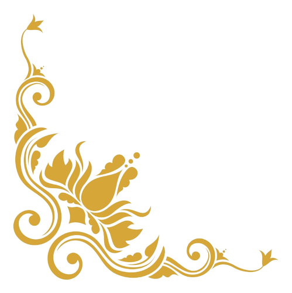

Милутин и Дијана
Позивамо Вас да својим присуством увеличате прославу нашег венчања, у недељу 09.10.2022. У Београду
Црквено венчање ће се одржати у
Храму Покрова Пресвете Богородице
у Београду у 15 часова.
Прослава ће се одржати у ресорану Амфора
на Новом Београду од 16:30 часова
Добро дошли!
Породице
Јоцић и Цветковић